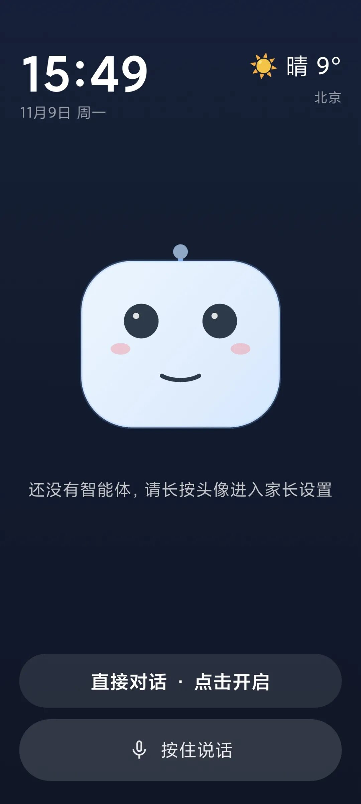

完整仓库：gitee.com/lanyacp/xiaozhi-assent，仓库中release,需要的小伙伴可以去下载尝试
注意：程序设置的是电器设置，运行之后，只能通过电脑退出，慎用！
我有台红米4高配版，原来孩子还拿来玩玩，后来屏幕也碎了，虽然能看，但很难用，吃灰几年了。Android 6.0，3G 内存，新一点的 App 早就装不上了。折腾了两天，真正坐在电脑前动手的时间大约两小时——剩下的部分，是一个 AI 助手替我干的。下面是我这一路的真实记录，包括判断、失误和当时的原话。
📱 红米 4 · Android 6.0.1💰 硬件 0 元⏱ 人工约 2 小时🗓 历时 2 个工作日
📖 全文 10 节 · 手机读完约 20 分钟
01先说结果

屏幕中央一张圆脸，偶尔眨一下眼，上面是时间和天气。孩子喊一声“靓靓靓靓”，它会抬起头应一声，然后就可以像跟人说话一样跟它聊——讲故事、点歌、问天气、问“为什么天是蓝的”。
它说话的时候嘴巴一张一合，讲到开心的事眼睛会弯起来。安静两分钟后自己回到待机，继续眨眼等人叫。屏幕被锁死了，孩子乱点也出不去，只有长按脸三秒才能进我的设置页。
💵 硬件花了 0 元
手机是抽屉里翻出来的，服务器是最便宜那档。没买麦克风、没买开发板、没焊任何东西。
⏱ 人工约 2 小时
这是我真的坐在那儿动手的时间，分在两个工作日里。其余时间它在后台跑，我该干嘛干嘛。
💰 每月几块钱
只有大模型按用量计费，其他全部是免费方案。孩子天天聊，一个月也就几块钱。
📦 留下的东西
源码、安装包、操作手册、设计解析，都在我的 Gitee 仓库里。别人拿着也能做一遍。
📌 这份文档是什么
不是产品说明书，也不是“你照着做”的教程。它是一份过程记录——我为什么做、怎么跟 AI 配合、哪一步卡了多久、哪些判断事后看是对的、哪些是我自己搞砸的。
02我为什么做这个
起因很普通简单：家里有台旧手机，抽屉里放了大半年，卖二手没人要，扔了可惜。
我考虑过买一个成品智能音箱。但用过的人都知道后面会发生什么——待机推广告、点进推荐就是商城、儿童内容要开会员；更要紧的是，孩子的每一句话都要上传到厂商服务器，你既查不到也删不掉；而且厂商一旦停服，你花钱买的硬件立刻变砖。
所以我想自己做一个。不买新硬件的版本。
转折点是这个判断
我盯着那台手机看了很久，最后想明白一件事：
💡 这台手机什么都不缺，只缺一个脑子
它有麦克风（不比音箱差）、有喇叭、有一块能显示表情的屏幕（这点连很多智能音箱都没有）、有 Wi-Fi、有电池。它唯一做不到的是“思考”——2016 年的芯片跑一个语音识别模型都吃力。
而“思考”这件事，是唯一可以外包的：租一台云服务器，让手机只做耳朵、嘴巴和脸。
这个判断定下来之后，后面所有技术选择都顺了：手机端尽量轻，重活全在服务器；服务器只跑开源方案，不锁定任何厂商；协议用现成的生态，不自己造。
03它站在谁的肩膀上
这里必须说清楚，否则容易误会成“某人从零造了个 AI 机器人”。事实是：语音对话最难的那部分，早就有人开源了——设备和服务器的通信协议、对话轮次管理、打断机制、音频流传输。这些自己写要踩无数坑，而它们已经在开源生态里跑了很久。
我做的是：把这套原本给 ESP32 硬件设计的云端方案，硬塞进一台 2016 年的老手机，然后把中间所有的兼容性坑填平。
3.1 我用了哪些开源项目
小智 AI 开源生态各项目不一
78/xiaozhi-esp32 起家
整套“AI 语音盒子”的玩法：设备与云端的通信协议、对话流程，以及生态里大量现成的客户端和固件。
xinnan-tech / xiaozhi-esp32-serverMIT
服务端。语音识别、大模型、语音合成的调度，插件机制，记忆，以及天气、音乐这些内置能力。
eiriksgata / xiaozhi-client-flutter未声明许可
安卓客户端。我是在它的基础上改的，不是从空白项目写的。上游作者注明仅供学习交流。
k2-fsa / sherpa-onnxApache-2.0
本地唤醒词识别 + 离线语音识别。模型小到能在 2016 年的机器上跑，这一点是整个方案成立的前提。
SenseVoice
中文语音识别模型。让我不用花钱调云端识别接口。
EdgeTTS
微软
语音合成。免费，音色库里有一个很适合儿童的柔和女声。
Open-Meteo
天气数据。不用注册、不用 key，直接能问。
3.2 我自己动的那几处
改造点不多，但每一个都是“不加就做不成”：
把构建工具锁在旧版本，最低支持 Android 6
新版 Flutter 引擎已经放弃 Android 6，用它打出来的包在这台手机上根本装不上。往回退版本是唯一的路，而且会牵动 Gradle、AGP、Kotlin 一整套版本。
离线唤醒词支持自定义中文词
待机监听如果走云端，等于 7×24 小时上传麦克风音频，流量、隐私、耗电三输。放本地跑小模型：唤醒零流量，断网也能叫醒它，换词不用重新打包。
一张会眨眼的机器人脸
手机有屏幕，这是它相对音箱的最大优势。用矢量绘制而不是动画模型，几 KB 的代码就能在 3G 内存上跑满帧。
儿童锁 + 家长入口
孩子拿到手机第一件事就是乱点。全屏锁定、返回键拦截，只有长按脸 3 秒才能进设置——这个时长刚好是孩子无意中按不出来的。
重写了点歌和天气两个插件
内置点歌只能播我手动放进服务器文件夹的 mp3；内置天气用的接口 key 早就失效了，一查就报错。
通话级回声消除 + 插话开关
老手机的软件回声消除太弱，麦克风会听到自己的喇叭——它会自己打断自己，然后自己接自己的话往下说。
3.3 边界（这段我写得直白一点）
⚠️ 不是所有部分都能随便用
服务端是 MIT、唤醒引擎是 Apache-2.0，这两块很自由；但我用的那个安卓客户端上游没有声明许可证，作者写明“仅供学习交流、禁止商用”。所以这个项目我自己玩可以，不能拿去卖。
点歌走的是公开音乐接口，没有官方授权。自己家里听属于个人使用，一旦做成对外服务就有版权风险。
仓库里不能有敏感信息。API Key、服务器公网 IP、孩子的名字照片，一样都不能提交上去——我发布前专门检查过这些。
04为什么我把这件事交给 AI 做
决定做之后，我先算了一笔账：这件事需要哪些技能？答案是四套——Linux 服务器、Docker、Flutter 编译、安卓调试。我会一点 Linux，剩下三样基本空白。
按传统路子，我这种基础去做，查文档加踩坑，估计得两三周。而且很可能在第三天就放弃了——不是因为难，是因为烦。
需要的技能
自己做：Linux + Docker + Flutter + 安卓调试，四套
交给 AI：会说话、会点手机屏幕
实际耗时
自己做：乐观估计 2～3 周
交给 AI：2 个工作日，其中我参与约 2 小时
卡住的时候
自己做：搜半小时，找到的答案版本还对不上
交给 AI：把报错原文丢过去，它当场试、当场改
我后来想明白的三件事
一、这个项目 80% 的工作是“体力型调试”，不是“智力型设计”。版本报错、编码乱码、接口限流、下载中断——这些事的特点是“试错次数多”而不是“难度高”。正好是 AI 的强项，人的弱项。
二、长活可以并行。下载模型、编译安装包这类事挂后台跑，我去测手机，两边同时推进。这一点对结果影响很大——如果串行做，两天根本不够。
三、全过程自动留档。日志、命令、改了什么、为什么改，都在对话记录里。所以事后我能把它整理成你现在看的这篇。
但有一半事它做不了
这一点我一开始也没想清楚，做到一半才明白：有些事物理上只能我来做，AI 再强也伸不出手。
只有我能做的
🧑 我
· 插数据线、按手机上的“允许”
· 对着手机说话，判断它听没听懂
· 听一个音色，判断孩子会不会喜欢
· 决定这个功能要不要做
· 最终验收：这东西到底好不好用
这些是“体验判断”，它无法替我完成
我全交给它的
🤖 它
· 登录服务器、装环境、部署服务
· 改代码、编译打包、推送文件
· 盯着两边的日志找原因
· 写文档、整理教程、发布版本
· 把我踩过的坑记下来
这些是“可自动化的工作”，交给它更快更稳
想清楚这条分工线之后，整个协作就顺了：它干一切能自动化的，我只出现在不可替代的节点上。
05我是怎么跟它说话的
整件事下来，真正管用的说话方式就四种。都是我自己试出来的，不是从哪学的。
① 用原话说需求
开工第一句我就没用术语。我说的是“我有一台闲置的红米4，想把它改成孩子的 AI 助手，能语音聊天、放音乐、当闹钟”。没有说“我要一个 KWS+VAD+ASR 管线”——那多半还是我从别处看来的，写错了反而带偏。越是你自己的话，越接近你真正想要的东西。
② 服务器直接给它
我没打算学 Linux。把服务器的访问权限给了它，它自己连上去装环境、配服务、开端口。中间我需要做的只有一件事：粘一条命令、按一次回车。权限给的是“可随时作废”的那种，项目做完删掉就行。
③ 长活挂后台
下载模型、编译安装包，我没有一次是守着进度条过的。挂上去，我去干别的，做完它叫我。这一点省下的不是时间，是耐心——守着编译等到第 40 分钟，人是会崩的。
④ 出问题只给现象
我学会了闭嘴不诊断。只说“它讲故事时会自己打断自己”，不猜“是不是缓冲区问题”。原因很实在：我猜错了，它就得先花时间排除我的错误假设，反而更慢。
06全过程：八个阶段
下面是我实际走的顺序。每个阶段标了：我说了什么、它干了什么、我做了什么、什么算做完，以及当时真实的时间。八步里，前三步只是对话；第四步部署最费时间，但它在后台跑，你不用守着；第五步改造手机最需要你在场；最后三步看你想做到哪一步。
我说“我有一台闲置的红米4手机，想把它改成孩子的 AI 助手，能语音聊天、放音乐、当闹钟，不用屏幕操作。家里还有台云服务器，帮我评估怎么弄，然后一步步做。”
它干拆需求、比方案（为什么手机+服务器、为什么不买硬件、为什么不刷机）、排优先级。它列了好几条路线，我选了成本最低的那条。
我做只回答它问的关键问题：服务器什么配置、预算多少、家里有没有常开的电脑。
结果拿到一份带优先级的方案，看完说“就这么办”。
它干先探服务器够不够用——系统版本、内存、磁盘、端口占用，再决定装哪个版本。这一步它比我谨慎，我本来想省事直接上完整版，被它劝住了（内存不够会崩）。
我做它给我一条命令，我在服务器的终端里粘进去回车。就这一下。
结果之后它就能自己登录服务器，我不再需要当中间人。
🔐 关于权限，说清楚一点
给 AI 的权限，等于给它那台电脑的权限。我的做法是：用可以随时作废的钥匙（公钥），项目做完把那行删掉就行。云端 API Key 同理，选能随时重置的，结束去控制台吊销。
我说“我有个阿里云的 key，帮我看看能用什么模型。”
它干拿实测代替想象。这个 key 到底能调哪些模型、思考模式怎么关、支不支持工具调用，全部真发请求试一遍，再下结论。
我做把 key 发给它。
结果它做一次冒烟测试，能拿到回答就算通。
📌 这一步让我印象最深
它实测出一件文档里根本没写的事：我那个资源包的 key 只镜像了部分接口——能对话，但不能上传音频做语音识别。
如果按文档想当然设计，我会把语音识别也做成云端调用，然后在这条链路的最后一环才发现走不通，前面全白做。它提前把这个坑探明了，我才改成“识别放本地跑”。
它干拉代码、装容器环境、下模型、配点歌和天气插件、开端口。出错自己修——中间它自己重试了好几轮。
我做基本没管。它问过我一个选择题：点歌要儿歌库还是随便点。我选了“随便点”。
结果浏览器打开 http://服务器IP:8003/xiaozhi/ota/ 能看到“OTA 接口运行正常”。
我做① 数据线连电脑；② 打开“USB 调试”；③ 屏幕上弹授权框点“允许”；④ 它推过来安装包时点“安装”。
它干搭编译环境、编译安装包（这步在后台跑了很久）、通过数据线推送；顺手清掉系统里的广告和推送组件——清完待机不再弹广告了。
结果手机上打开 App，看到机器人界面。
⚠️ 这一步最容易卡，因为它在等我
AI 说“需要你点一下”的时候，最好马上过去点——它卡住的原因九成是在等一个物理动作：插线、点授权、连 Wi-Fi。
另外，“清理预装应用”这类操作我没有自己动手，全交给它判断。删错了（比如输入法、桌面）手机会没法正常用。
我说“我喊了唤醒词，它没反应。”
“它回答了，但声音断断续续，文字比声音快。”
它干同时盯服务器和手机两边的日志，按我描述的现象定位，改完重新部署，再让我试。
我做只报现象。“听到什么/没听到什么/哪里不对劲”就是全部信息，我说不出技术细节完全不影响它排查。
结果唤醒、对话、打断、点歌、查天气，全部能用。
我说“想加个自定义唤醒词。”“换个音色试试。”“孩子能按 Home 键逃出去，帮我锁住。”
它干改代码 → 重新构建 → 推送到手机，一条龙。
我做一次只提一个点。有次我一口气提了三个，结果有个功能坏了，排查了半天才发现是其中一个改动引起的连锁反应。
💡 后来我改成这样
每通一个功能，先用几天，再提下一个。用着用着才知道哪里别扭——那些“用出来的意见”，比一开始想的功能清单值钱得多。
我说“把整个过程写成教程，发到我的 Gitee 仓库，加个 Release 带上安装包。”
它干生成操作手册和设计解析、整理源码、打安装包、发布版本。
我做检查一眼有没有把服务器 IP、API Key 这些东西带出去。
结果别人拿着我的仓库也能做一遍——我踩过的坑，成了别人的捷径。
07我总结的七条
这七条是这两天里用真金白银的时间换来的。现在我做别的事也是这么跟 AI 配合。
1给现象，别给诊断
✅ “声音断断续续，文字先出来”
❌ “是不是音频缓冲区太小了”
我猜错了，它就得先花时间排除我的错误假设。我的猜测不是帮助，是干扰。
2报错原话和截图，全给
报错再长也整段复制过去，它自己会挑关键行。别“总结”报错——我以为不重要的那行，往往就是根因。
3它在等我时，动作要快
它卡住的时候，十有八九是在等一个物理动作：插 USB、点授权框、退账号、连 Wi-Fi。它说“需要你做什么”，我就尽快做，别过半小时才回来看。
4Key 给能吊销的
云端 API Key 发给 AI 没问题，它要拿来实测。但要选随时能重置的那种；项目结束去控制台点一下作废，成本为零。
5验收是我的事
音色好不好听、唤醒灵不灵、孩子买不买账——这些只有我能判断，也是它最需要的反馈。它不知道我孩子喜欢什么声音。
6大动作让它先解释
改服务器配置、删系统应用、改设备所有者这类“半永久”操作，我先让它说清楚做了什么、能不能反悔，再点头。别在没搞懂的情况下说“行你弄吧”。
7阶段验收，别攒一起
每通一个功能就立刻试，再提下一个。攒五个改动一起测，出问题时连“是哪个改坏的”都不知道，只能全部回退重来。
08卡住的时候
整个项目里我卡过很多次，但真正难的不是问题本身，是不知道该怎么开口。下面是我当时遇到的情况，和我后来说的话——这些说法都管用。
手机装 App 报错
“安装报错：解析软件包时出现问题。手机是红米4，Android 6.0.1。”
它说在推送，手机没反应
“手机现在连上电脑了，屏幕上没有弹任何东西。”
机器人自言自语
“它讲故事的时候会自己打断自己，然后自己接着自己的话说。”
想加 / 改功能
“孩子能用 Home 键逃出去。”
“天气查不了，它说没找到这个功能。”
界面完全看不懂
截图发过去 + “这个界面上我要点哪个？”
不知道问题在哪边
“能唤醒，但它不回话。我判断不了是服务器的问题还是手机的问题。”
💡 后来我固定用这个格式报障
「我做了什么操作；
看到的现象是什么（原话/截图）；
我以为应该是什么；
这是从什么时候开始变的（之前正常吗）。」
这四句同时给了“现象、预期、时间线”——正好是排查最需要的三样东西。比我说十句“它不好使”都管用。
10回头看
做完之后我一直在想一件事：这件事真正的门槛是什么？
不是技术。技术都在那儿摆着——开源协议、开源模型、免费接口，谁都能用。真正的门槛是“知道该问什么”和“愿意一直试下去”。前者需要一个人来判断方向，后者需要一个人不崩溃。
💡 如果你也想试一件事，我的三条建议
1. 从你已经有的东西开始。别先买设备。先看看家里有什么闲置的、手上有什么现成的账号——这个约束会帮你砍掉 90% 不必要的复杂度。
2. 第一句话用自己的原话。别翻译成术语，也别先去看教程。你越清楚自己想要什么，它越能给你对的路。
3. 把审美和验收留给自己。技术上它能替你做九成，但“这东西好不好用、值不值得”只有你说了算。
完整仓库：gitee.com/lanyacp/xiaozhi-assent
项目站在小智 AI 开源生态之上：服务端 xinnan-tech/xiaozhi-esp32-server（MIT）、唤醒与离线识别 k2-fsa/sherpa-onnx（Apache-2.0）、安卓客户端基于 eiriksgata/xiaozhi-client-flutter 改造（上游未声明许可证，仅限学习交流）、语音合成使用微软 EdgeTTS、天气使用 Open-Meteo。点歌走公开音乐接口，版权归原权利方，仅供个人使用。
文中的时间与成本是我这次的实际数字，换设备、换网络、换方案都会有差异。